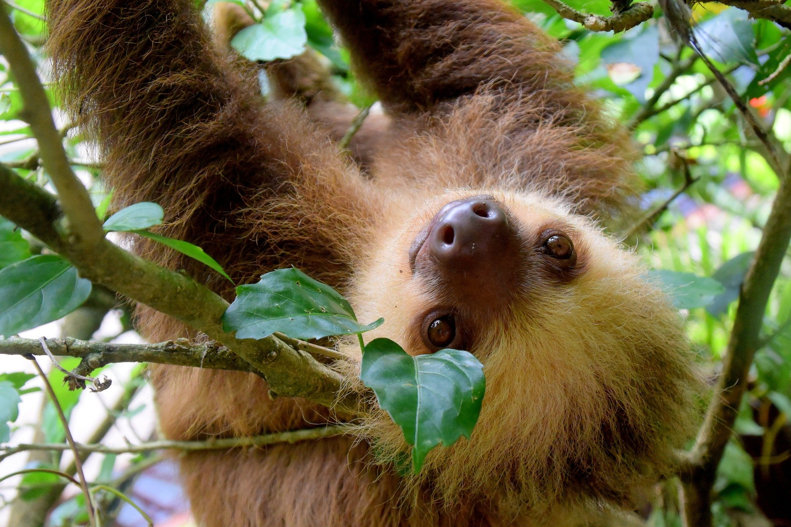
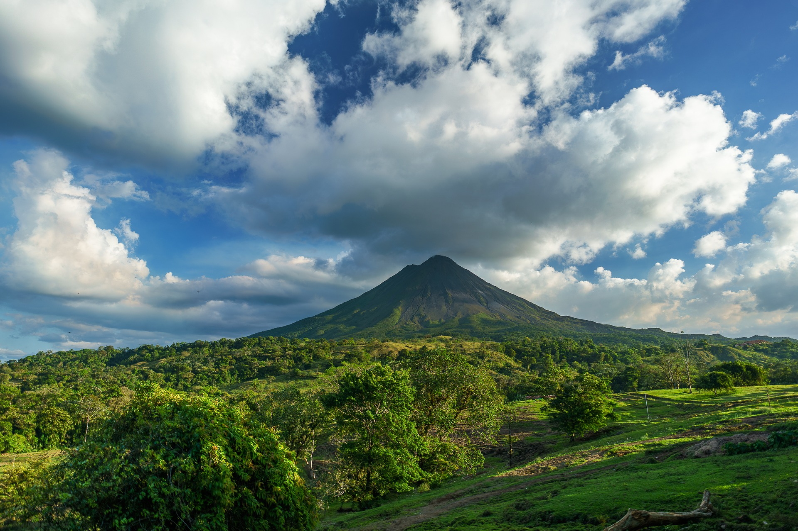

Last week I got back from my trip to Costa Rica with my best friends. It is one of the most beautiful countries I have ever visited! The people are so kind and generous, and the landscape is so beautiful. I still can't believe everything we did while there! We backpacked through the forest, relaxed in hot springs, learnt how coffee was made, and watched a group of sea turtles hatch. I can't wait to visit again!

This adorable sloth was hanging on one of the trees at a conservatory we went to. We searched all day to try and find on in the trees.

This is one of the volcanoes we saw while hiking. Did you know there are over 200 volcanoes in Costa Rica? But, only 6 of them are considered to be active.
Stay tuned! I will post more pictures later this week and details to our trip.